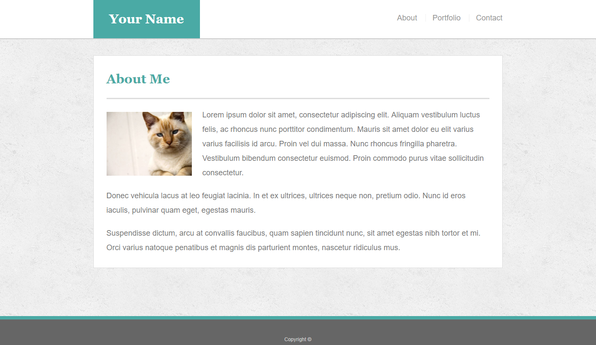
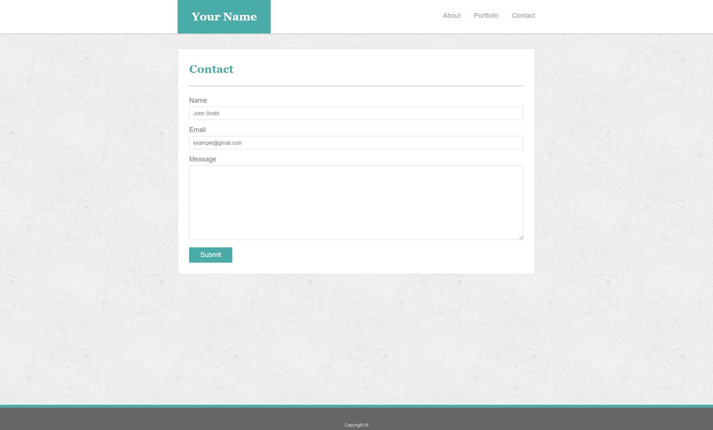
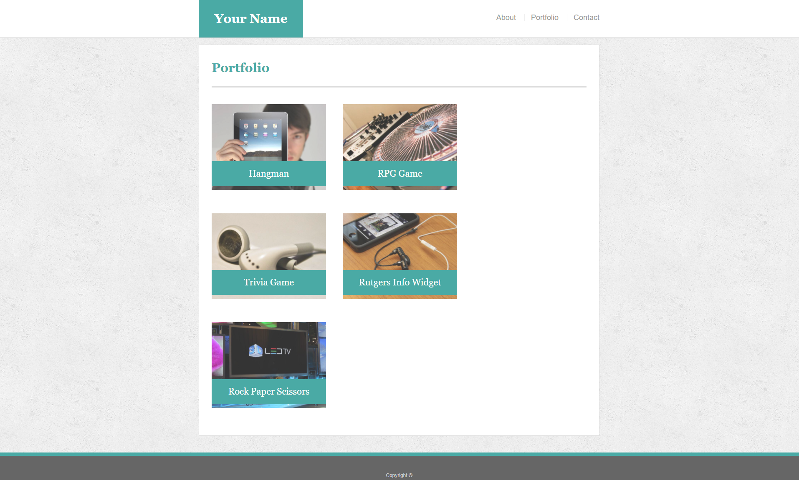

Module 1 Assessment
This assessment will be a challenge, but try to work through the steps to the best of your ability. Use both the information given to you in the lessons and Google to help answer any questions.
Be sure to read through ALL of the instructions before beginning the assignment.
Create a Portfolio Site
- Create a new folder in your prework repo titled
Module-1_Assessment.
- Navigate to the
Module-1_Assessment folder that you just created. Inside this folder, create the following:
- 3 HTML documents:
index.html, contact.html and portfolio.html.
- A folder called assets.
- Inside the assets directory, make two additional folders:
css and images.
- In the css folder, make a file called
style.css.
- In the
images folder, save the images you plan on using (like your profile image and the placeholder images for the portfolio).
- Add, commit and push the above changes to your GitHub repository.
git add .git commit -m "initial site files". git push origin master
With these initial steps complete, it is time to start building your Basic-Portfolio website. Reference these screenshots for your site:

- Contact Me - contact.html

- Portfolio Gallery - portfolio.html

IMPORTANT Your site's layout must match the designs in these screenshots. You'll find the specs for these designs below.
- When you create a website, it's standard practice to code your HTML files before writing any CSS and to write up one HTML file before moving onto the next. Write your HTML semantically, too:
- If something is a heading, you use a heading tag.
- If something is a list, you use an unordered or ordered list tag.
- You will be using Bootstrap to create this portfolio
- The content for the
index.html should be unique to you.
- Write a paragraph or two about yourself. Make it fun, show your personality!
- The main logo where it says "Your Name" should say your name. This may make the logo section smaller or wider depending on how long your name is—that is fine and expected.
- Add, commit, and push your code to GitHub often, especially when you complete a page.
- After all of your HTML and Bootstrap is written, you can begin styling your pages using the
style.css file you created.
- Once again, add, commit and push your changes to Github.
Additional Specifications
Using Bootstrap, your portfolio site should be made using the following items:
- A navbar
- A responsive layout (remember the grid, rows and columns are your friends)
- eg. On an xs screen, content should take up the entire screen. On sm and larger screens, you should have some margins on the left and right side of the screen. Check out various sites on your mobile device versus your computer to see this in action!
- Responsive images
- BONUS Using Bootstrap, make a sticky footer and use sub-rows and sub-columns on your portfolio site (Hint: Check out the Bootstrap documentation)
- Your Bootstrap solution should minimize use of media queries.
- Colors:
- Teal color (used for headings and backgrounds): #4aaaa5
- Regular font color (used for paragraphs and all text besides the headings): #777777
- Main header background color: #ffffff
- Main header border color: #cccccc
- Footer background color: #666666
- Main content background color: #ffffff
- Main content border color: #dddddd
- Fonts:
- For heading fonts use font-family: 'Georgia', Times, Times New Roman, serif;.
- For all other fonts use 'Arial', 'Helvetica Neue', Helvetica, sans-serif;.
- Profile Image Found on index.html:
- Use a picture of yourself.
- If you don't have a picture, you can grab a placeholder image from LoremPixel.
- Save the images to your images folder.
Portfolio Images:
- Placeholder images can be found at LoremPixel.
- Save the images to your images folder.
Background Images:
- The background pattern used was found on Subtle Patterns. You can browse through that site and find whichever pattern you like.
Dimensions:
- The entire content and the main section content area is 960px wide.